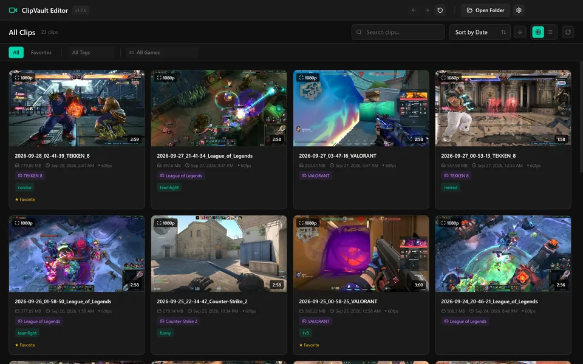
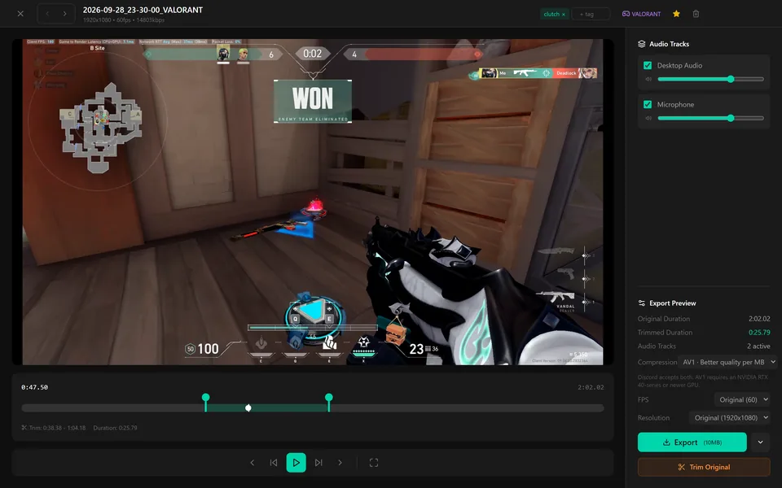
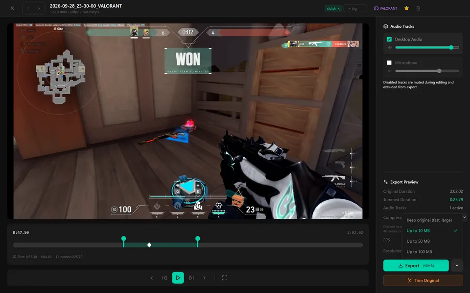
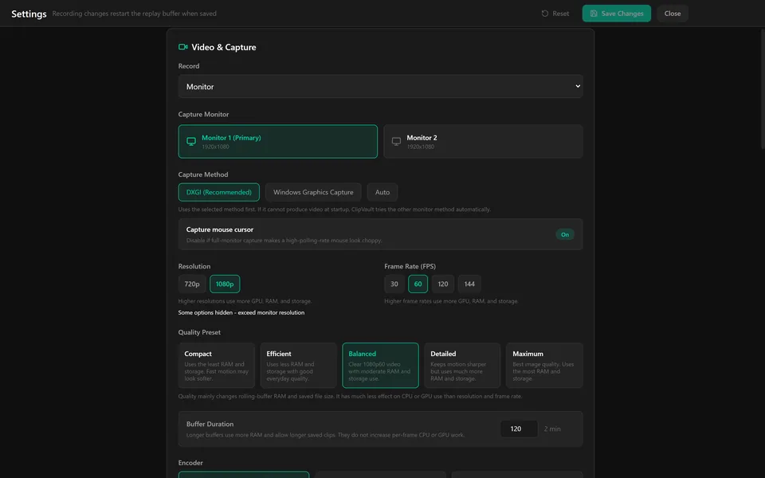

clipvault — save the last two minutes of gameplay with one key
A free, open-source game clipping app for Windows 10 and 11. It runs in the tray with an always-on replay buffer. Press your save hotkey and the last 2 minutes become an MP4 file, with game audio and your microphone on separate tracks.
# illustration, not real output # ClipVault has no command line tray running in the background buffer ▕████████████████████▏ 2:00 rolling, last 120 s kept press ● HOTKEY save last 120 s → MP4 file 2026-09-28_23-30-00_VALORANT.mp4 audio a1 game + desktop · a2 mic notify “Clip Saved” library new clip at the top tagged VALORANT
SYNOPSIS
Press your save HOTKEY.
HOTKEY is the save key you set in Settings. That is the whole interface while you play. ClipVault is a Windows desktop app with no command line; this page only borrows the manual-page format. The OPTIONS below are fields in the Settings screen, not flags.
DESCRIPTION
ClipVault runs in the background from the system tray and keeps an always-on replay buffer of your screen. When you press your save hotkey, the last 2 minutes are saved to your clips folder as a normal MP4 file.
The hotkey uses a low-level keyboard hook, so it works while a fullscreen game has focus. Game and desktop audio are recorded to one audio track and your microphone to another, so either can be turned down or off later.
Windows shows a “Clip Saved” notification and the clip appears in the library right away. Clips stay on your PC as ordinary files in a folder you choose. There is no account, and nothing is uploaded.
ClipVault is built on libobs, the capture and encoding engine from OBS Studio, plus an Electron and React app for the library and editor.
The replay buffer
LIBRARY
Every saved clip lands in the library.
- Thumbnails with hover-to-preview: clips play right in the grid.
- Grid or list view.
- Search, and sort by date, size, name or favorite.
- Filter by game, by tag, or to favorites only.
- Detected games are tagged automatically. The file name carries the game as well:
2026-09-28_23-30-00_VALORANT.mp4. - Select several clips to favorite, tag, add or remove a game, export or delete them together.

EDITOR
Open a clip to cut it down.
- Drag the trim handles. Playback stays inside the trim.
- Frame-step and 5-second skip controls for finding the exact moment.
- Add tags, mark the clip as a favorite, or change its game tag.
- Trim Original trims the file in place instead of exporting a copy.

AUDIO
Every clip has two separate audio tracks: track 1 is game and desktop audio, track 2 is your microphone. In the editor you can turn either track off or change its volume before export. A track that is off is muted while you edit and left out of the export.
EXPORT
Export writes a new file from the trimmed clip, with the tracks you left on.
- Size = Up to 10 MB | Up to 50 MB | Up to 100 MB | Keep original
- Up to 10 MB is the Discord-friendly one. Keep original is fast and large: it copies the recording without recompressing.
- Compression = H.264 | AV1
- H.264 is the most compatible. AV1 gives better quality per MB and needs an NVIDIA RTX 40-series or newer GPU.
- FPS = Original | 30 | 60
- Resolution = Original | 720p | 1080p
- Optional. Both stay at the clip’s original values unless you change them.
When the export finishes, a small window opens: drag the file from it into a chat or a folder, copy its path, or open its folder.

CAPTURE
By default ClipVault records a whole monitor with DXGI screen capture. It does not hook or inject into games, which keeps it anti-cheat friendly.
| Record | What it captures |
|---|---|
| Monitor (default) | the selected monitor, via DXGI |
| Games automatically (experimental) | supported games only; follows the active game |
| Monitor + automatic games (experimental) | the monitor, switching to a supported game while one is running |
| Choose an app window | one window you pick, for other apps or unrecognized games |
Encoding uses NVENC on NVIDIA GPUs, which has the lowest CPU use, and falls back to x264 on the CPU. “Auto” picks for you. Recording is H.264 or AV1 at 30, 60, 120 or 144 fps, with five quality presets.

OPTIONS
These are fields in the Settings screen, written the way a manual lists options. Underlined values are defaults. Saving recording changes restarts the replay buffer.
- Record = Monitor (default) | Games automatically | Monitor + automatic games | Choose an app window
- What gets recorded. The two automatic modes are experimental. See CAPTURE.
- Encoder = Auto (default) | NVENC | x264
- Auto uses NVENC when available, then falls back to x264. NVENC needs an NVIDIA GPU and has the lowest CPU use; x264 runs on the CPU.
- Codec = H.264 (default) | AV1
- H.264 is the most compatible. AV1 makes smaller files and needs an NVIDIA RTX 40-series or newer GPU; ClipVault uses H.264 if AV1 cannot start.
- Frame rate = 30 | 60 (default) | 120 | 144
- Frames per second of the recording.
- Quality = Compact | Efficient | Balanced | Detailed | Maximum
- Presets that trade image quality against buffer memory and file size.
- Buffer duration = seconds (default 120)
- How far back a saved clip reaches. Longer buffers use more RAM and allow longer clips.
- Hotkey = key (default F9)
- The key that saves a clip. It uses a low-level keyboard hook, so it works while a fullscreen game has focus.
- Start with Windows = on | off
- Start ClipVault in the tray when Windows starts.
FILES
%APPDATA%\ClipVault\ └── settings.json <clips folder>\ chosen at first run ├── 2026-09-28_23-30-00_VALORANT.mp4 ├── 2026-09-28_02-41-39_TEKKEN_8.mp4 ├── … └── clips-metadata\ ├── 2026-09-28_23-30-00_VALORANT.json └── …
%APPDATA%\ClipVault\settings.json- All settings. Shared by the background recorder and the app, and kept across upgrades.
<clips folder>\*.mp4- Your clips, named date_time_GAME.mp4. Ordinary MP4 files: play, copy or move them like any other file.
<clips folder>\clips-metadata\*.json- One small file per clip with its tags, favorite, game, trim points and audio track settings.
EXAMPLES
Save a moment and share it under 10 MB
- Play. ClipVault is recording into the replay buffer.
- Press your save hotkey. Windows shows “Clip Saved”.
- Open the clip from the top of the library and drag the trim handles.
- Turn off the microphone track if you do not want it.
- Export with “Up to 10 MB”, then drag the file from the export window into your chat.
Watch the tour
AVAILABILITY
ClipVault 1.7.6 for Windows 10 and 11 (x64). Free, no account.
A first-run setup walks through the clips folder, capture, audio and hotkey. After that ClipVault sits in the tray and can start with Windows.
Requirements: Windows 10 or 11, 64-bit. With an NVIDIA GPU, ClipVault encodes with NVENC (AV1 needs an RTX 40-series or newer); without one, x264 encodes on the CPU. Free disk space for your clips.
FAQ
- Is it free?
- Yes. Free and open source under GPL-2.0-or-later. No account.
- Does it hook into my games?
- No. The default monitor capture uses DXGI screen capture, with no game hooks or injection. That is why it is anti-cheat friendly.
- Do I need an NVIDIA GPU?
- No. With one, ClipVault uses NVENC for the lowest CPU use. Without one, it encodes with x264 on the CPU.
- Can I change the hotkey or the 2 minutes?
- Yes. The save hotkey and the buffer duration are both in Settings.
- Are my clips uploaded anywhere?
- No. Clips are MP4 files in a folder you choose. Nothing is uploaded.
- Does it run on macOS or Linux?
- No. ClipVault is for Windows 10 and 11.
- Is there a command line?
- No. This page only uses the man-page format. Everything happens in the tray app and the library window.
BUGS
Report bugs on the GitHub issue tracker. “Games automatically” and “Monitor + automatic games” are experimental.
LICENSE
GPL-2.0-or-later. ClipVault uses libobs from OBS Studio, which is licensed GPL-2.0-or-later, so ClipVault is too. Full text: LICENSE.
SEE ALSO
- OBS Studio (libobs)
- The capture and encoding engine ClipVault is built on.
- README.md
- Building ClipVault from source.
- CHANGELOG.md
- Release history.